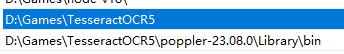

利用Tesseract对图片或pdf进行OCR
1. 准备
- 下载OCR核心工具包Tesseract并安装，参考Tesseract OCR 下载及安装教程 （中英文语言包）_eng.traineddata下载-CSDN博客，注意中文语言包需要下载，如果不下载语言包，可能无法识别中文。
- 下载PDF转图片工具包Releases · oschwartz10612/poppler-windows (github.com);如果仅仅是OCR图片，可以不用下载这个
- 完成后，将上述两个的（tesseract.exe&pdfimages.exe）目录加入到电脑的环境变量PATH中：

2 安装python 依赖
下面安装Python 的依赖
pip install pytesseract
pip install pdf2image
3 识别图片
def ocr_image():
from PIL import Image
# 打开图片
image = Image.open('demo.png')
# 使用pytesseract进行OCR识别
text = pytesseract.image_to_string(image, lang='chi_sim') # lang设置为中文
# 输出识别结果
print(text)
4 识别pdf
def ocr_pdf(pdf):
from pdf2image import convert_from_path
# 设置tesseract.exe的路径
pytesseract.pytesseract.tesseract_cmd = r'D:\Games\TesseractOCR5\tesseract.exe'
# 将PDF文件转换为图像
images = convert_from_path(pdf,dpi=200, first_page=0, last_page=3,size=(1000*3,1414*3)) #适当提高size参数可以提升识别准确率！x2~4
# 对每一页进行OCR处理
for i, image in enumerate(images):
text = pytesseract.image_to_string(image, lang='chi_sim') # !lang设置为中文
print(f"第{i + 1}页的内容：")
print(text)
# 识别完成后可以存文件~